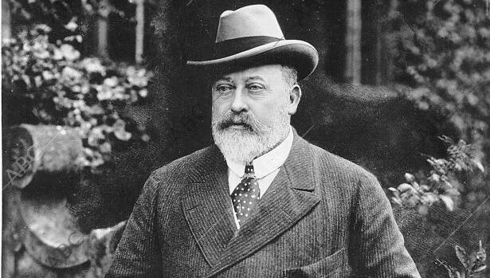

Forma del Reino Unido
El Reino Unido cuenta con una monarquía constitucional como forma de gobierno. Es decir, el soberano es el jefe de Estado, pero la capacidad de elaborar y aprobar leyes reside en un Parlamento electo, señala Royal Uk el sitio web oficial de la Familia Real Británica.
“Aunque el soberano ya no tiene un papel político o ejecutivo, sigue desempeñando un papel importante en la vida de la nación”, reconoce el sitio de la realeza.
La Corona británica es una institución monárquica del tipo constitucional, cuyo titular, el monarca británico o soberano, es el jefe de Estado del Reino Unido y de los territorios británicos de ultramar. El monarca británico es también el jefe de Estado de otros catorce países, cada uno de los cuales formaron alguna vez parte del Imperio británico; estos, juntos con el Reino Unido, son conocidos como los Reinos de la Mancomunidad de Naciones.
Quienes han sido los reyes y reinas del Reino Unido
Desde 1837, despues de casi 130 años de formación del Reino Unido, hasta 2023, con la coronación de Carlos III, estos han sido sus reyes y reinas:
Victoria I, Una Reina con Influencia
Tras la muerte de Guillermo IV en 1837, Victoria se convirtió en reina a la edad de 18 años. Fue monarca hasta su fallecimiento, acontecido en 1901. Durante su reinado fue muy popular. En temas sociales tendía a beneficiar a los más desfavorecidos y apoyó a muchas organizaciones benéficas involucradas en educación, hospitales y otras áreas.
La web de la realeza asegura que, aunque apoyó una serie de leyes que amplió la base social y económica del electorado, “Victoria demostró que un monarca que gozaba de un alto nivel de prestigio y que estaba preparada para dominar los detalles de la vida política podía ejercer una importante influencia”
Eduardo VII y sus Intereses
El primer rey de la casa de Sajonia-Coburgo y Gotha, también de origen alemán, gobernó durante los comienzos del siglo XX y la competencia imperialista entre Reino Unido y Alemania.
Eduardo tenía 59 años cuando se convirtió en rey el 22 de enero de 1901, cargo que ejerció hasta 1910, cuando falleció. Según el sitio web oficial de la Familia Real Británica, sus principales intereses estaban en los asuntos exteriores, así como los militares y navales, para los cuales impulsó reformas.

Jorge V, El hombre que Reinó Durante la Primera Guerra Mundial
Jorge V asumió en 1910 y como monarca vivió la primera guerra mundial. Royal Uk señala que no solo visitó hospitales y se acercó a las tropas, también presionó por un trato adecuado para los prisioneros de guerra alemanes y para los objetores de conciencia.
“En 1917 el sentimiento anti-alemán le llevó a adoptar el apellido de Windsor (por el castillo del mismo nombre)”, agrega el sitio.

Eduardo VIII, El Rey que Dejó el Trono por Amor
Eduardo VIII reinó solo 325 días: de enero a diciembre de 1936 y nunca fue coronado. La razón que explica su abdicación es su enamoramiento por la actriz estadounidense Wallis Simpson. Como ella se había divorciado en dos ocasiones no era aceptable como reina, por lo que el monarca dimitió para contraer matrimonio con ella, relata la web de la corona.
Jorge VI, El Rey de la Segunda Guerra
Tras la abdicación de su hermano, Jorge VI se convirtió en rey en 1936. “Era un hombre concienzudo y dedicado”, asegura Royal Uk. Al monarca le tocó atravesar la Segunda Guerra Mundial, periodo durante el cual visitó y se mostró cercano a las tropas, lo cual le valió el respeto de su pueblo y se convirtió en un icóno del esfuerzo bélico británico.
Isabel II, El Reinado más Extenso
Isabel fue la sucesora de su padre, Jorge VI. Accedió al trono con solo 25 años. Según señala la plataforma informativa de la corona, la reina destacó por su sentido del deber y su devoción por una vida de servicio. Falleció el 8 de septiembre de 2022. Gobernó por 70 años, más tiempo que cualquier otro monarca en la historia británica.
Acabó siendo la más longeva en la historia de su país y de la casa Windsor.
Carlos III, El Nuevo Monarca
Anteriormente conocido como el Príncipe de Gales, Carlos se convirtió en rey a los 73 años, tras la muerte de su madre el 8 de septiembre de 2022 y fue coronado el 6 de mayo de 2023.